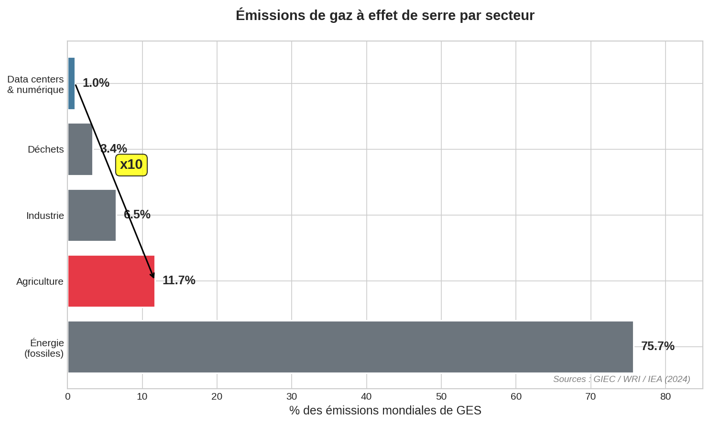
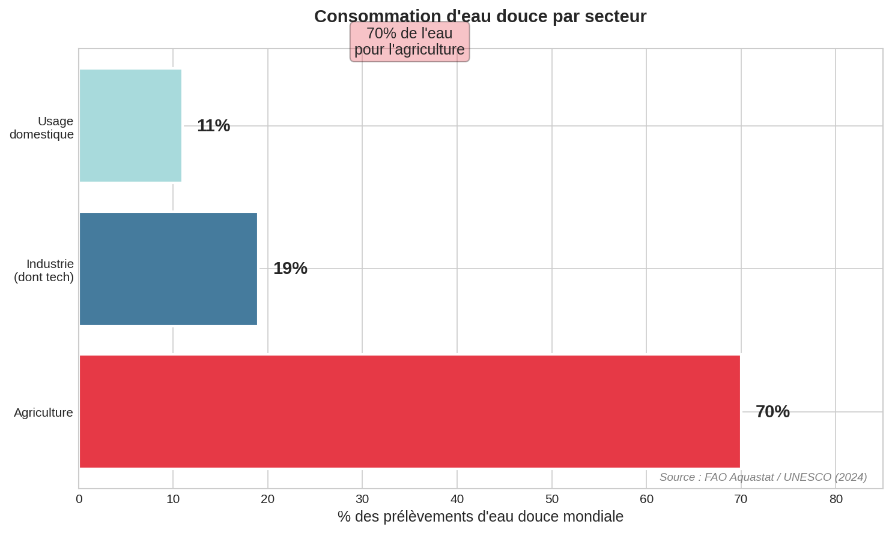
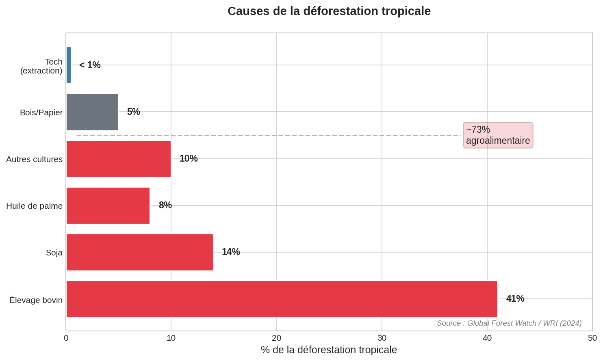
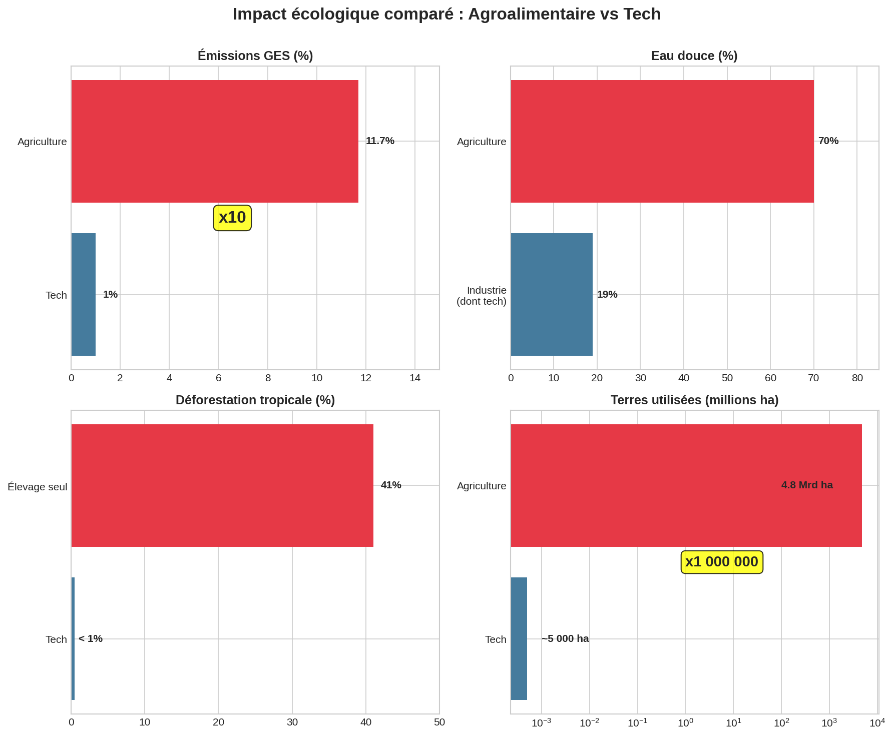
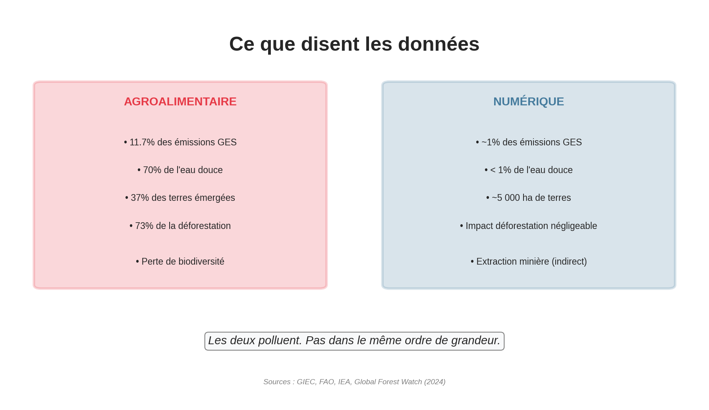

Ce que disent les donnees
Donnees 2024
Cette analyse ne constitue pas une defense de l'industrie technologique. Mon domaine d'etude se limite aux donnees environnementales : emissions, eau, deforestation, utilisation des terres.
Le developpement technologique souleve de nombreuses questions ethiques (IA, vie privee, conditions de travail, extraction miniere, obsolescence programmee) qui ne sont pas traitees ici car elles depassent mon champ de competence.
Je ne dis pas que la tech est "bien". Je presente uniquement ce que montrent les donnees sur l'impact environnemental.
Le numerique est souvent pointe du doigt pour son impact environnemental : data centers, smartphones, streaming video... Mais comment se compare-t-il reellement a l'agroalimentaire ?

Sources : GIEC, IEA (2024)
| Secteur | Emissions GES mondiales |
|---|---|
| Agroalimentaire | 11.7% |
| Numerique | ~1% |

Sources : FAO, Water Footprint Network (2024)
| Secteur | Eau douce mondiale |
|---|---|
| Agriculture | 70% |
| Industrie (dont tech) | 19% |

Sources : Global Forest Watch, FAO (2024)
| Cause | Part de la deforestation |
|---|---|
| Elevage seul | 41% |
| Agriculture totale | 73% |
| Numerique | < 1% |

Comparaison sur 4 indicateurs cles
| Indicateur | Agroalimentaire | Numerique | Ratio |
|---|---|---|---|
| Emissions GES | 11.7% | ~1% | x10 |
| Eau douce | 70% | <1% | x70+ |
| Deforestation | 73% | <1% | x73+ |
| Terres utilisees | 4.8 Mrd ha | ~5 000 ha | x1 000 000 |

Sources : GIEC, FAO, IEA, Global Forest Watch (2024)